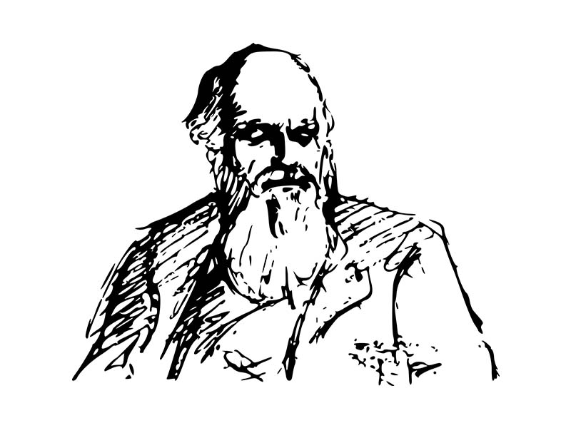

La evolución del Hombre: La cronología acerca del origen y evolución humana (Hominización) aun no es precisa. Existen numerosas clasificaciones, muchas veces contradictorias, pues aun hay varias incógnitas en el estudio del hombre.
De un modo general, podemos decir que existe un tronco común entre los grandes monos o primates antropoides (pongidos) y los humanos (homínidos). En algún momento, esas dos familias formarían y evolucionarían en direcciones diferentes: Los pongidos darían origen a los gorilas, chimpances, orangutanes, etc., en cuanto los Homínidos pasarían a dar formación, a través de una larga evolución (austrolipithecus, homo habilis, homo erectus, homo neanderthal ) hasta originar al homo sapiens, hombre actual. La Hominización es el proceso de evolución o transformaciones del ser humano desde sus ancestros más antiguos.
Los Homínidos: Los homínidos son clasificados en dos géneros: el primero genero es el AUSTROLOPITHECUS (del latín australis= meridional, sur + del griego pithecos=mono "mono del sur") que presentaba características físicas aun distantes del hombre actual. El segundo genero es el genero HOMO, al que pertenecemos los seres humanos. No se sabe si el hombre actual habría evolucionado del Austrolopithecus o tal vez sea independientes conectados por un ancestro común.Los primeros homínidos habrían vivido en el territorio de África del Sur-Oriental.
Las tres especies más conocidas de austrolopithecus son: Australopithecus Afarensis, el más antiguo, habría vivida hace cerca de 3 millones años atrás. El Austrolopithecus Africanus y el Austrlopithecus Robustus existieron hace 1.5 y 1 de millones de años atrás respectivamente, siendo probable que el Australopithecos Africanus haya dado origen al genero Homo. Estas tres especies son claramente diferenciadas de los pongidos (pongidae) porque, a pesar de su pequeña capacidad craneana (450 cm3 en promedio), tenían una postura bípeda y no poseían grandes dientes caninos existentes en los antropoides.
Homo habilis Homo habilis Hace cerca de 2 millones años atrás - los homo habilis surgieron como la primera especie del genero Homo, fueron también comtemporáneos a los Australopithecus Africanis y Australophitecus Robustus. El Homo Habilis, llamado así por su capacidad o habilidad para fabricar instrumentos cortantes de piedra. El Homo Habilis utilizo las piedras afiladas para cortar la carne y para tallos de raíces que eran parte de su dieta habitual.
El volumen craneano variaba entre 650cm3 a 800 cm3 . Además de eso, tenia una postura menos curvada que la de los Australopithecus
Hace cerca de 1,5 millones años atrás, el Homo Habilis, hasta ese entonces restringido solo en África, dio origen a una especie que se diseminaría por Asia y Europa: El Homo Erectus. Este hominido demostraría una notable evolución en el uso de utensilios y herramientas de piedra (cuchillos, hachas, raspadores).
homo erectus Homo Erectus El Homo Erectus es llamado así por tener una posición recta, erecta al caminar, también se caracterizo por el ser uno de los primeros homínidos en producir y usar el fuego. En el aspecto físico alcanzaron una altura de 1.8 m; tenían una frente prominente y una mandíbula maciza, desprovista de quijada. La cabeza del homo erectus estaba articulada con su columna vertebral de modo que se proyectaba hacia adelante al caminar.
Hay numerosos fósiles de Homo Erectus encontrados en el continente africano, pero también se han descubierto sus fósiles, ligeramente diferentes, en Asia y Europa.
Hombre de Pekin (Sinanthropus pekinensis): hallado en Pekin (China).
Estos fósiles fueron clasificados como subespecies del Homo Erectus y recibieron, en complementación las denominaciones de javanensis y pekinensis
Los fósiles del hombre de Neanderthal fueron descubiertos en el valle de Neander (Alemania). Muchos ejemplares fósiles semejantes serian después hallados en Francia, Yugoslavia, Palestina y África del Norte.
Homo Neanderthalensis hombre de Neanderthal La estatura del hombre de Neanderthal era en promedio de 1.65 m y de contextura robusta. Su capacidad craneal esta estimada en 1.500 cm³ y su cráneo presentaba una forma levemente achatada en el parte occipital, con la frente inclinada hacia atrás, tenia maxilares robustos, una quijada poco pronunciada y una nariz prominente amplia.
Vivió entre 120 mil y 35 mil años a.c. Las razones de su desaparición aun no son claras, pero hay hipótesis que habrían sido exterminados o tal vez sucumbido por el cambio climático o a la presencia del más evolucionado Homo Sapiens (Hombre actual)
Los Neanderthales eran un homínido muy social acostumbrado cazar en grupo y abrigarse del frió en cavernas. Los Neanderthales habrían tenido un sistema de comunicación, es decir, fueron seres más sociables que sus antecesores y acostumbraban enterrar a sus muertos (evidencia de un pensamiento filosófico)
El Homo Sapiens surgió alrededor del año 40 o00 a.c. Los primeros espécimenes estudiados fueron descubiertos en la cueva de Cromagnon (Hombre de Cromagnon), en una localidad al Sur de Francia. El Homo Sapiens era más altos que los Neanderthalensis y tenían razgos físicamente menos pesados, presentaban cráneo alargado, la frente amplia y la quijada redondeada.
evolución humana Hombre de Crogmanon Colonización del Mundo: El Homo Sapiens sustituiría al hombre de Neanderthal y, alrededor del año 25 mil a.c. poblaría toda la Tierra. El Homo Sapiens es el responsable de la perfección de las técnicas de obtención de alimentos, ampliación de las formas de organización social, de la religión y de las manifestaciones culturales. Con el paso del tiempo, el Homo Sapiens daría origen a las razas humanas.
Origen de las Razas humanas: Actualmente, muchos estudioso evitan utilizar el termino raza para designar un grupo humano con determinado fenotipo (características biológicas visibles, como el color de la piel); en su lugar, prefieren usar la palabra etnia. El motivo para ese rechazo es sobretodo ideológico, debido a la connotación negativa de la palabra "raza" con "racismo" (actitud anticientífica basada en la supuesta superioridad de ciertas razas sobre las demás).
Ahora, como el concepto de etnia envuelve también pecularidades culturales, es difícil dejar de usar la palabra raza si se tienen en cuenta las características estrictamente físicas de los grupos humanos (color de la piel y de los ojos, estatura, forma del cráneo y del rostro, tipos de nariz y cabello, etc.). Pero, todas estas características son estudiadas por la antropología física, dejando a la antropología cultural la realización del estudio etnográficos y etnológicos.
Se cree que las razas humanas actuales son el resultado de ciertos grupos en áreas especificas, a cuyo medio se adaptaron. En ese caso, como la procreación se produjo dentro de un entorno restrictivo, se acentuaron determinados razgos físicos, diferenciando a un grupo humano de otro. Es obvio que tales diferencias no implican cualquier idea de superioridad o inferioridad entre estos grupos humanos o razas (blanca, asiática, negra, etc).
{kind=link}